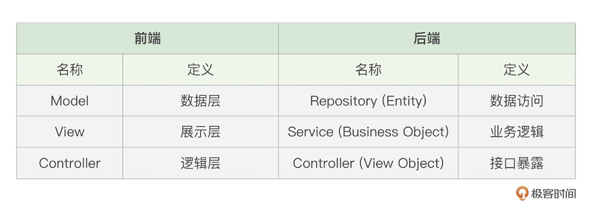
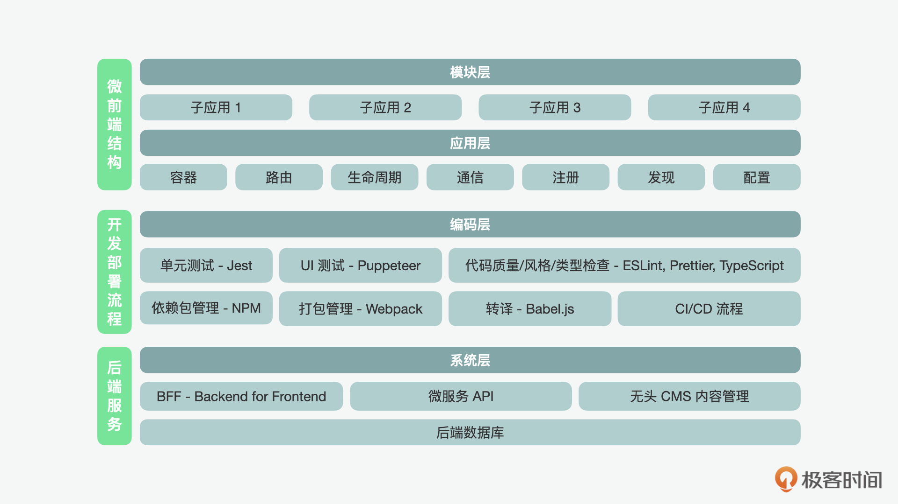

- 00 开篇词 JavaScript的进阶之路.md.html
- 01 函数式vs.面向对象：响应未知和不确定.md.html
- 02 如何通过闭包对象管理程序中状态的变化？.md.html
- 03 如何通过部分应用和柯里化让函数具象化？.md.html
- 04 如何通过组合、管道和reducer让函数抽象化？.md.html
- 05 map、reduce和monad如何围绕值进行操作？.md.html
- 06 如何通过模块化、异步和观察做到动态加载？.md.html
- 07 深入理解对象的私有和静态属性.md.html
- 08 深入理解继承、Delegation和组合.md.html
- 09 面向对象：通过词法作用域和调用点理解this绑定.md.html
- 10 JS有哪8种数据类型，你需要注意什么？.md.html
- 11 通过JS引擎的堆栈了解闭包原理.md.html
- 12 JS语义分析该用迭代还是递归？.md.html
- 13 JS引擎如何实现数组的稳定排序？.md.html
- 14 通过SparkPlug深入了解调用栈.md.html
- 15 如何通过哈希查找JS对象内存地址？.md.html
- 16 为什么环形队列适合做Node数据流缓存？.md.html
- 17 如何通过链表做LRU_LFU缓存？.md.html
- 18 TurboFan如何用图做JS编译优化？.md.html
- 19 通过树和图看如何在无序中找到路径和秩序.md.html
- 20 算法思想：JS中分治、贪心、回溯和动态规划.md.html
- 21 创建型：为什么说Redux可以替代单例状态管理.md.html
- 22 结构型：Vue.js如何通过代理实现响应式编程.md.html
- 23 结构型：通过jQuery看结构型模式.md.html
- 24 行为型：通过观察者、迭代器模式看JS异步回调.md.html
- 25 行为型：模版、策略和状态模式有什么区别？.md.html
- 26 特殊型：前端有哪些处理加载和渲染的特殊“模式”？.md.html
- 27 性能：如何理解JavaScript中的并行、并发？（上）.md.html
- 28 性能：如何理解JavaScript中的并行、并发？（下）.md.html
- 29 性能：通过Orinoco、Jank Busters看垃圾回收.md.html
- 30 网络：从HTTP_1到HTTP_3，你都需要了解什么？.md.html
- 31 安全：JS代码和程序都需要注意哪些安全问题？.md.html
- 32 测试（一）：开发到重构中的测试.md.html
- 33 测试（二）：功能性测试.md.html
- 34 测试（三）：非功能性测试.md.html
- 35 静态类型检查：ESLint语法规则和代码风格的检查.md.html
- 36 Flow：通过Flow类看JS的类型检查.md.html
- 37 包管理和分发：通过NPM做包的管理和分发.md.html
- 38 编译和打包：通过Webpack、Babel做编译和打包.md.html
- 39 语法扩展：通过JSX来做语法扩展.md.html
- 40 Polyfill：通过Polyfill让浏览器提供原生支持.md.html
- 41 微前端：从MVC贫血模式到DDD充血模式.md.html
- 42 大前端：通过一云多端搭建跨PC_移动的平台应用.md.html
- 43 元编程：通过Proxies和Reflect赋能元编程.md.html
- 结束语 JavaScript的未来之路：源于一个以终为始的初心.md.html
- 捐赠
41 微前端：从MVC贫血模式到DDD充血模式
你好，我是石川。
在前面“JS之器”的一个单元，我们介绍了为 JavaScript 开发赋能的工具。今天，我们来到了专栏的最后一个单元，也就是“JS之势”。在这个单元里，我们会看一下在 JavaScript 和前端开发中的一些趋势。这节课我们就来看看“微前端”这个近些年兴起的概念。
从微服务到微前端
在说微前端之前，我们先来看看启发微前端概念的微服务。
微服务是在 2011 年首次被提出的一种架构模式。在微服务的概念被提出之前，Web 服务的开发主要经历了 C/S 结架构和 SOA 结构两个阶段。下面我们先来看看 C/S 结构。
C/S结构
C/S 结构的全称是“客户机和服务器结构（Client Server）”，这种结构可以算是 Web 开发中早期的系统架构之一了。当时，大多的 Web 开发依赖的是开发者创建几个 HTML、CSS 和 JavaScript 文件，然后通过 SFTP 将开发完的程序上传到服务器，供客户端用户通过浏览器，经过网络来访问和下载相关资源。随着网站和 Web 应用程序规模的增加，简单的 C/S 结构已经不再能够处理大型企业 Web 应用程序的复杂性需求了。
SOA结构
这时，C/S 结构的演变——SOA，也就是面向服务的系统架构的概念，在 90 年代末诞生了。SOA 通过面向服务的体系结构设计，建立了一种分层体系结构设计方法。顶层是应用程序；中间层是服务；底层是后端，包含业务逻辑和数据库。
在 SOA 结构下，我们就可以看到组件化的设计思想了，因为在这种结构下，每个服务都可能被封装。每个服务本身是可重用的，既可以用于构建复合服务，也可以单独服务于特定的业务对象。并且它也可以具有不同级别的颗粒度，并提供一个抽象层，因此业务逻辑和数据不必对应用程序可见。总体而言，服务提供者和消费者两端的开发人员可以基于服务之间的合约进行独立的开发和相互的集成。
微服务结构
随着时间的推移，微服务的结构又在 2011 年前后诞生了，随后兴起。乍一看，它只是 SOA 的不断演变的结果，并与 SOA 架构有许多共同特点。例如，微服务结构的理念中也包含封装、颗粒度、抽象、契约协议等概念。不过不同之处在于，微服务更关注基于域驱动的限界上下文、协作和 DevOps。微服务的到来对业务架构、软件开发和软件工程都有着不同程度的影响。
从业务架构的角度来看，它是基于域驱动的设计，这样的设计更多关注的是面向业务对象而不是面向过程的设计。第二个是从软件开发的角度，传统的服务开发模式大多是基于贫血的域模型（ADM，Anemic Domain Model）的开发，而随着微服务和 DDD 的兴起，逐渐转为了充血的域模型（RDM，Rich Domain Model）。
贫血的域模型中一个典型的例子就是 MVC 的结构，可是说到这里，你可能会问，MVC 难道不是一个前端的开发架构，为什么说它是 Web 后端服务开发中的贫血模型呢？这是因为其实在后端开发中，也有三层的分层结构叫做 Repository、Service、Controller，这三层分别负责数据访问、业务逻辑和接口暴露。

在后端分层的开发中，数据对象、业务对象和展示对象都只包含数据，不包含业务逻辑，所以被称之为是贫血模式。而与之相对的充血模式，其实主要是指在业务逻辑层的充血。也就是在服务层，在 Service 类的基础上加入了 Domain 类，Domain 类中既包含了数据，也包含了逻辑；而 Service 类则被弱化，更多只负责调用逻辑、权限和事务控制等。
这里，你可能会问，那这样看来，DDD 听上去很玄乎，可从开发层面感觉只是把原本的 Service 类换成了 Domain 类，这对开发出来的服务能有什么影响呢？
其实在这里，主要的影响是设计理念和开发流程引起的。我们可以想象下，在传统的贫血模式下，服务的设计是被动的，几乎都谈不上设计，而更多的是基于前端的界面数据需求的响应，我们甚至可以把它称作是 SQL 驱动的开发。比如前端需要一个数据的展示，会把需求提给后端，后端开发这时来想什么样的 SQL 语句可以获取相关数据，然后创建或更改数据访问对象、业务对象和展示对象，最后以接口暴露的方式反馈给前端。
如果是一个并不复杂的应用系统，用这种模式开发还好，然而我们一旦面对较为复杂的业务逻辑的时候，这样的设计就会变得难以维护，因为任何一个细小的数据请求变化，都可能会产生新的代码，其中有很多可能是重复的代码。
而域驱动和 SQL 驱动的主要不同点在于，域驱动要求开发人员在一开始就要梳理清楚所有的业务架构，定义领域模型，以及模型中所包含的属性和方法。这些领域模型其实就等于是可以复用的业务中间层。所以面对新的功能需求开发时，都可以基于之前定义好的领域模型来完成。
除了在开发设计和开发流程上的转变外，微服务和 DDD 也从协作和软件工程的角度改变了开发的习惯。这种模块化的服务构建方法，允许将每个后端服务设计和开发为更小的构建模块，从而实现更大的系统灵活性。通过对 DevOps、持续集成和部署的支持，还可以减少开发的周期时间，提高运维效率。越来越多的软件公司和大型企业一直在推广和改造这种架构，然而，同样的想法在前端 Web 开发中尚未成熟。
微前端结构
但随着时间的推移，到了 2016 年，微前端的概念就出现了。如果说微服务是打破了后端的单体结构一样，那么微前端的概念则是打破了前端的单体结构。这样，前端的不同模块也可以被组件化地基于页面需求来加载和相互交互。此外，微前端也允许具有不同技术、技能和工具集的不同前端团队可以在每个单独封装的业务领域中独立开发一组功能。
微前端的设计和实现
下面，在正式说到微前端之前，我们再来看看前端系统结构的演变。
早期的网站更多是“多页面应用程序”，这意味着终端用户访问的是网站的每个独立页面，页面间的跳转是通过点击超链接的方式操作的。每当跳转的操作被调用的时候，页面就会刷新。网站的内容和页面创建通常是由 CMS 提供的支持，CMS 代表内容管理系统，用于创建、编辑和发布动态内容，尤其是在网络上。
早年，网络上曾出现过很多流行的 CMS 工具，如 WordPress 或 Drupal。CMS 系统有两个不同的用户界面，一个用户界面可供公众访问，另一个界面可供后台作者和编辑访问。业务逻辑和内容主要在后端呈现，输出是包含 HTML 格式信息的网页，供公众查看。
CMS 的工作流程是，内容作者将在后台选择内容创作的模板和组件，一旦完成页面的构建和内容填充，作者将发布页面，页面将被发送。通常，CMS 会结合 CDN（Content Delivery Network）一起使用，通过缓存，加快页面和资源加载时间。当然，这种经典的 CMS 方法至今仍被广泛使用，例如现在使用 WordPress 创建个人博客的人还有很多。CMS 工具流行的一个原因是，选择用 CMS 来开发主要是着重信息更新，不需要大量的业务逻辑交互的页面。
随着 Ajax 的兴起，以及后来的 HTML5 和 CSS3 技术的出现，网站的互动性越来越强，丰富的互联网应用程序也不断涌现。由于更多的用户交互，SPA（单页应用程序）的技术就随之兴起了，在 Web 开发中得到了越来越广泛的应用。虽然在单页应用程序中，仍然可以使用 CMS，但它的功能将仅限于管理内容而不是创建HTML页面。在这种情况下，前端应用程序承载了页创建和展示的任务，而 CMS 只负责内容的提供。通常这样的 CMS 被称为无头 CMS（headless CMS）。
SPA 不仅限于 PC 端，还可以用于移动端和其他嵌入式系统，并且可能会根据客户端类型对内容进行一些更改，在这种情况下，还可能需要添加一个 BFF 的适配层。当然 BFF 的作用不仅在适配，它也可以用于 API 层的复合或聚合、服务的认证或授权，或者在遗留系统之上构建微服务。
单页应用程序的另一个问题是搜索引擎优化。搜索引擎通常基于 URL 链接搜索内容。然而，对于单页应用程序，搜索引擎不再能够轻松找到页面，因为当用户从一个部分导航到另一个部分时，没有 URL 更新。谷歌开发了强大的算法，甚至可以抓取 SPA 页面。然而，谷歌并不是世界上唯一使用的搜索引擎，仍然有许多搜索引擎无法抓取服务器端渲染和客户端渲染的 HTML 页面。
针对这个问题，目前最常用的解决方案是同时使用客户端和服务器端渲染，这意味着前端和后端将共享相同的模板文件，并使用单独的模板引擎来渲染包含数据的页面。这种与 Node.js 结合的模式被称为同构 JavaScript（isomorphic JavaScript）。
而 Web 应用系统从 SPA 进一步演变到微前端的过程中，有几点是我们需要特别注意的。微前端的设计通常包括4层结构的考虑，分别是：系统层结构、应用层结构、模块层结构和编码层结构。

系统层的架构：涉及了我们希望微前端如何与其它系统或应用程序（例如后端或后台系统）交互。后端系统需要某种类型的集成，通常涉及使用微服务、BFF、API 契约、用于开发测试的 mock API 和进行身份验证的 OAuth 等。
应用层的架构：包括我们用来构建微前端应用程序本身的框架、设计系统与周围的实用工具、库和程序。
模块层的架构：涉及了用作应用程序中主应用和子应用构建块的所有组件和模块。比如 Web Components 的技术对于微前端开发非常重要，因为它主要提供了前端开发中的模块化支持。但在使用 Web Components 的时候，要特别注意的是，它不是W3C定义的官方标准，并且也存在兼容性的问题，市面上使用 Web Components 开发通常都基于如 Lit 或 Stencil 这样的工具来降低使用风险。
编码层的结构：这一层次的体系结构涉及开发流程（包括存储库管理、代码合并、代码提交和拉取请求等）、代码质量、编码标准等。这里，这些是我们在微前端开发中应统一考虑的原则。
基于这4层的微前端结构，我们可以重点看看应用层的 App 容器、配置、注册和发现、中央路由、生命周期管理，以及编码层的开发流程、构建和部署流程。
App注册发现和路由
尽管微前端架构是一个去中心化的概念，但一个中央的 App 容器对于创建所有组件协同工作的一致体验仍然是至关重要的。除了定义了一个 App 容器以外，定义一个子应用注册和发现的机制也很重要，这和微服务的注册和发现类似。一旦有了子应用的注册和发现机制，中央 App 容器则可以通过路由来发现，并将用户重定向到正确的内容所在位置。
App生命周期管理
除了上述机制外，每个子 App 自身的生命周期管理也是很重要的。在一个 App 的生命周期中，需要处理的任务包括了：从容器中插入、更新或删除的模块，或处理组件的加载、更新、卸载和错误处理等关键任务。这个过程从子 App 注册器获取配置开始，host 会检索配置的详细信息，当发生 URL 更改时，更改事件将根据配置详细信息触发现有子 App 的卸载和新的子 App 的装载。当 URL 更改时，新的子 App 将加载到 host。
App开发和部署管理
在任何开发工作中，一个高效的开发流程都很重要，在微前端开发中更是如此。为了保持高效的开发管道，可以通过我们在上一单元“JS 之器”中讲到的多种工具（如Jest、ESLint）结合来检查几个关键点，以实现更好的代码功能、结构、格式以及质量检查。同样的，我们可以在流程中加入 NPM 或 Yarn 等软件包的管理和依赖管理工具，通过 Babel 来对代码进行编译，以及通过 webpack 的工具对应用进行打包，这些都可以在构建和部署中使用来提高管理的效率。
总结
从这一讲中，我们看到了微前端的出现离不开在它之前出现的微服务以及基于领域的设计模型。但是在前端，不同于后端的点在于，前端并不是服务的提供方，而是消费者。所以微前端虽然受到了微服务的启发，都是强调基于业务领域的设计、组件的封装和模块化的开发，但还是有着使用场景上的本质不同。
同时，微前端也不是完全的去中心化，因为我们还是需要一个主 App 容器负责子 App 的加载。在子 App 间，不同于单体设计，这里我们需要花更多的精力来保证子 App 的注册和发现，路由以及生命周期的管理。而且越是去中心化，我们越是需要团队间有一套“共识机制”保证开发和部署流程的管理。但是这样带来的好处是，我们可以在子团队间有更大的开发自由，同时，在规模化的情况下，可以保证协作的效率。
思考题
在微前端中，每个组件都是独立封装的，你知道如何实现它们之间的通信吗？
欢迎在留言区分享你的经验、交流学习心得或者提出问题，如果觉得有收获，也欢迎你把今天的内容分享给更多的朋友。我们下节课再见！
© 2019 - 2023 Liangliang Lee. Powered by gin and hexo-theme-book.